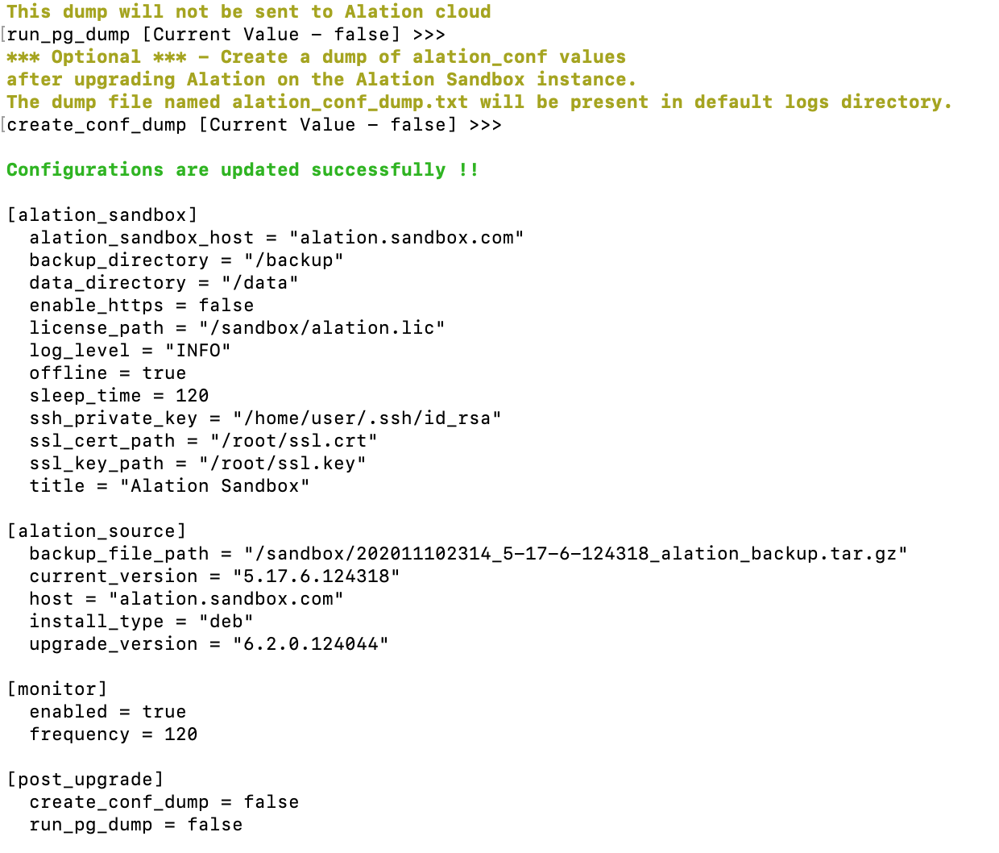

Configure Sandbox¶
Important
The feature on this page is no longer offered, but you can reference the legacy documentation below. See Non-Production Environments in the Cloud for details about our current offering for Alation Cloud Service customers.
Use this information to configure Alation Sandbox of versions 2.0.0.120180 and newer.
Sandbox includes a configuration utility for setting the configuration parameters. The parameter values should be sequentially set one by one. You can press Enter to go to the next parameter.
Important
Before you begin configuring, have the information you have previously noted down at the ready:
Path to the Alation license on the Sandbox instance
Alation version that should be installed (required for the Standalone mode)
Alation version for upgrade (required for both modes)
Path to the backup file:
Path on the main Alation instance if you prefer to download the backup form the main Alation instance
Path on the Sandbox instance if you have placed the backup file on the Sandbox instance
Path to the file on Amazon S3 if you prefer to auto-download from Amazon S3
For the SSL configuration:
Path to SSL certificate on the Sandbox instance
Path to SSL key on the Sandbox instance
To configure:
On the Sandbox host, go to directory alation-sandbox:
cd /opt/alation/alation-sandbox
Run the command below to open the Sandbox configuration client. Initially, the client only displays the first parameter.
sudo ./alation-sandbox edit-config
{kind=link}
Specify a value or leave the default, if relevant. See the table Configuration Parameters for parameter descriptions. Required parameters appear in pink; optional parameters appear in yellow.
Press Enter to go to each next parameter:
{kind=link}
After you have gone through all the parameters, you will see the Configurations are updated successfully message and a preview of all values you have set:
Note
From Sandbox version 5.10.136653, you can update each parameter separately by using the
edit-configcommand and the corresponding flag. See Update Sandbox Configuration Parameters for more information.
{kind=link}
Verify the configuration by running the
pre-checkscommand from /opt/alation/alation-sandbox:cd /opt/alation/alation-sandbox sudo ./alation-sandbox pre-checks
Configuration Parameters¶
For Sandbox, you can:
Configure SSL for the Sandbox instance (disabled by default)
Configure the Connected or Standalone mode:
Connected:
Set the host parameter to the IP or hostname of the main Alation instance
Set the
current_versionparameter to 0.0.0.0
Standalone:
Set the
current_versionparameter to the version number to be installed. Whenevercurrent_versionis set, thehostparameter is ignored and Sandbox runs in Standalone mode.
Configure the automatic logs upload (enabled by default)
Configure the run time metrics collection (enabled by default)
Configure post-upgrade actions (disabled by default)
Parameters |
Values |
|---|---|
[alation_sandbox] |
Use this section to configure settings for the Sandbox instance:
|
alation_sandbox_host |
Set this parameter when HTTPS is enabled. DNS name or Hostname of the Alation Sandbox Server. This parameter will be used as the base URL of Alation Sandbox instance. Use the same name that was used when generating SSL certificates. |
backup_directory |
Path to the Alation backup directory on the Alation Sandbox instance. Set if the path differs from default. |
data_directory |
Path to the Alation data directory on the Alation Sandbox instance. Set if the path differs from default. |
enable_https |
Choose whether HTTPS should be enabled for the Sandbox instance.
|
license_path |
Specify the path to the Alation license on the Sandbox instance. |
log_level |
Log Level for Sandbox (INFO/DEBUG). |
offline |
Allow the automatic Sandbox logs upload to the Alation Cloud.
When set to |
sleep_time |
Sleep time in seconds to let Alation services settle. |
ssh_private_key |
This parameter is used in the Connected mode when connection to the main Alation instance is allowed. In the Standalone mode, this parameter does not apply. For the Connected mode, specify the path to the shared SSH Key on the Sandbox instance to be used to connect to the main Alation instance from the Sandbox instance. |
ssl_cert_path |
Set this parameter if HTTPS is enabled. Path to SSL certificate on the Sandbox instance. |
ssl_key_path |
Set this parameter when HTTPS is enabled. Path to the SSL key on the Alation Sandbox instance. |
title |
Name of the application. |
validate_ssl |
Added in version 5.1.0.136653 Set this parameter when HTTPS is enabled. Enables ( |
[alation_source] |
Use this section to configure the Connected or Standalone mode for the Sandbox. |
backup_file_path |
The path to a backup file to be restored on the Sandbox instance:
|
current_version |
Default: Set to the version of Alation to install on the Sandbox instance if you want Sandbox to run in the Standalone mode. For the Standalone mode:
If For the Connected mode, set this parameter to |
host |
Set a value for this parameter to enable the Connected mode and to allow Alation Sandbox to connect to the main Alation instance Accepts the hostname or IP Address of the Alation instance host
server. If set, Alation Sandbox will connect to the Alation instance
to fetch the backup file (specified in The default value is |
install_type |
Package type used to install Alation on the Alation Sandbox
instance: |
upgrade_version |
Version of Alation to upgrade to on the Alation Sandbox instance |
[monitor] |
Configure Sandbox run time monitoring |
enabled |
Enable performance monitoring during the upgrade process. |
frequency |
Monitoring frequency in seconds to capture statistics. |
[post_upgrade] |
Configure post-upgrade actions. |
create_conf_dump |
Create a dump of alation_conf values after upgrading Alation on the Alation Sandbox instance.
The dump file named alation_conf_dump.txt will be present in the default logs directory. |
run_pg_dump |
Run
The dump will be stored at /data2/tmp/rosemeta_dump.sql inside the Alation shell. This dump will not be sent to the Alation Cloud. |
Example Configuration for the Connected Mode¶
[alation_sandbox] alation_sandbox_host = "alation.sandbox.com" backup_directory = "/backup" data_directory = "/data" enable_https = false license_path = "./alation.lic" log_level = "INFO" offline = true sleep_time = 120 ssh_private_key = "/home/user/.ssh/id_rsa" ssl_cert_path = "/root/ssl.crt" ssl_key_path = "/root/ssl.key" title = "Alation Sandbox" validate_ssl = false [alation_source] backup_file_path = "/data2/backup/202007030701_5-17-7-124815_alation_backup.tar.gz" current_version = "0.0.0.0" host = "alation.prod.com" install_type = "rpm" upgrade_version = "6.2.1.124921" [monitor] enabled = true frequency = 120 [post_upgrade] create_conf_dump = false run_pg_dump = false
Example for Configuration for Standalone Mode¶
[alation_sandbox] alation_sandbox_host = "alation.sandbox.com" backup_directory = "/backup" data_directory = "/data" enable_https = false license_path = "/root/alation.lic" log_level = "INFO" offline = true sleep_time = 120 ssh_private_key = "/home/user/.ssh/id_rsa" ssl_cert_path = "/root/ssl.crt" ssl_key_path = "/root/ssl.key" title = "Alation Sandbox" validate_ssl = false [alation_source] backup_file_path = "/root/5_17_7_124815_backup.tar.gz" current_version = "5.17.7.124815" host = "alation.sandbox.com" install_type = "rpm" upgrade_version = "6.2.1.124921" [monitor] enabled = true frequency = 120 [post_upgrade] create_conf_dump = false run_pg_dump = false
Proceed to Run the Sandbox Executable